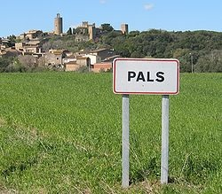

Poems, Portraits, and Pals is a chance to do different types of poetry/writing.
Directions: Choose two items from the list below to write about and have fun!
1. Color me red (or blue, green, etc.). List fifteen things you can think of when you think of the color RED. Include the sound of red, the feeling of red, and the taste of red.
2. List ten new sayings you would write for fortune cookies.
3. "How are you feeling?" Write twelve ways to answer without using "fine!"
4. Come to your senses. Choose a human emotion or any other idea. Think about it and experience it with all five senses. Write a line that tells what color it is. Then write some other lines to describe it using just one of the senses in each line. (Color: taste, smell, sight, sound, and feel).
Example:Joy is bright green.
It tastes like orange juice.
It smells like sunshine.
And reminds me of fireworks.
It sounds like a crackling fire.
Joy makes me feel like giggling.
5. List eight reasons why people should or should not give Valentines.
6. Have you ever apologized for something for which you weren't really sorry? Write a poem or note that gives an apology for something you've done.
Example:I have eaten
the plums
that were in
the icebox
and which
you were probably
saving
for breakfast
Forgive me
they were delicious
so sweet
and so cold
---William Carlos Williams
7. PHOETRY is a combination of poetry and photography. Take (or bring in) a snapshot of anything that interests you. Then write poetry to describe actions, impressions, feelings or places represented in the picture.
8. Write a DIAMANTE (see Day 10) that tells about opposites.
9. Write about a friendship between unusual pairs: a tennis shoe and a potato peel; a snail and a scotch tape holder.
10. Write a letter to the "thing" you love most (stickers, baseball cap, teddy bear, chocolate marble ice cream, bed, soccer, etc. Tell your favorite thing why you love it.
Student example:Oh, my beloved bed.
How I love to fall
Into you each night
After a stressful day.
You are still there
With open arms
And welcoming smile.
Thank you for everything.
Thank you with all my heart.
--Ken Burns (Grade 9)